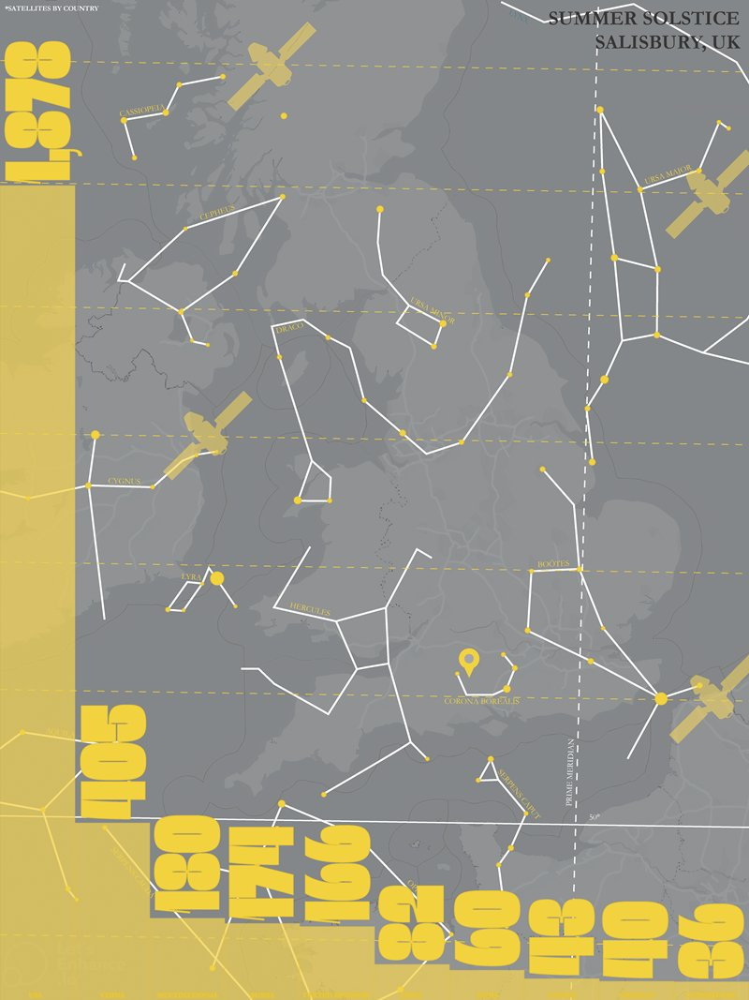
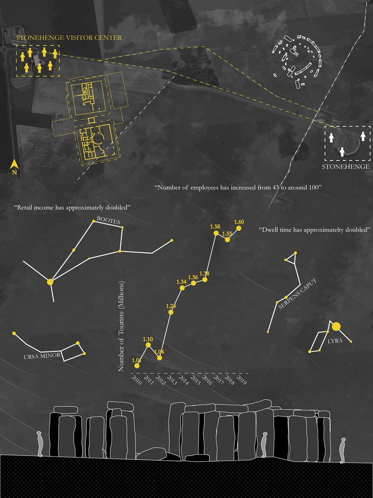
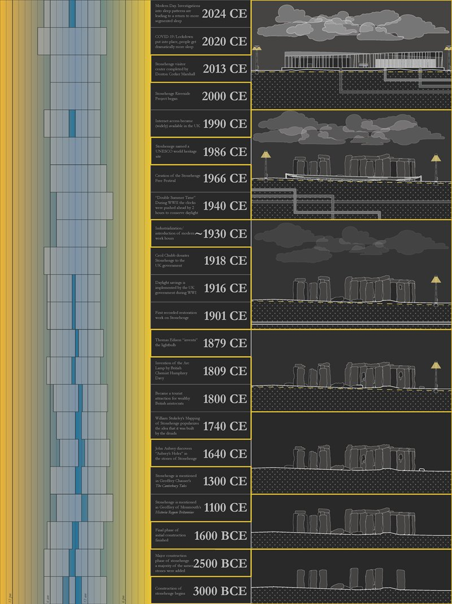
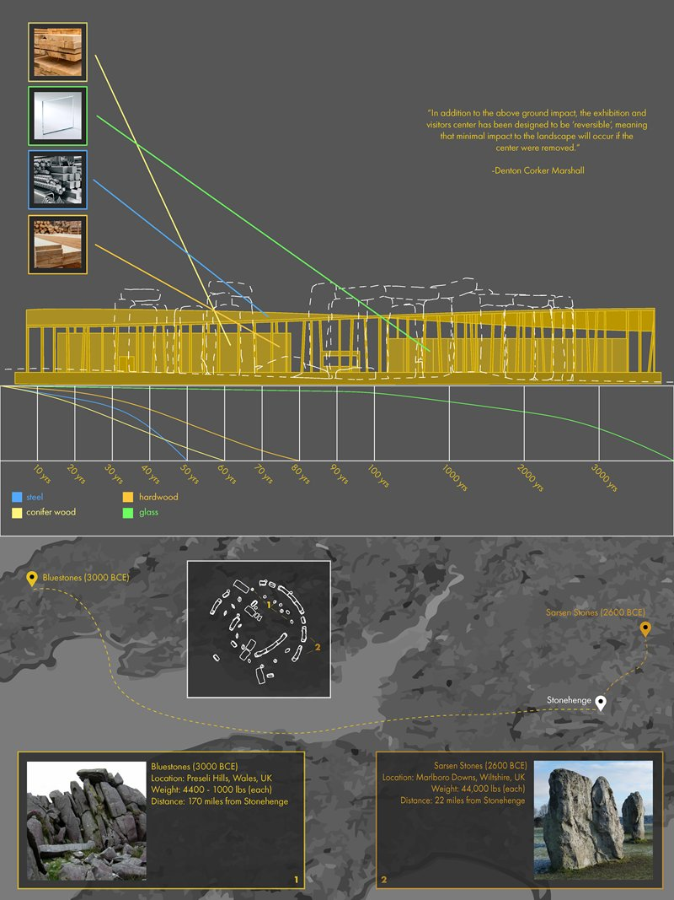

Drawing — Research study
Stonehenge Nighttime Studies
Nighttime drawings of Stonehenge and its changing meanings.




Drawing — Research study
Nighttime drawings of Stonehenge and its changing meanings.



